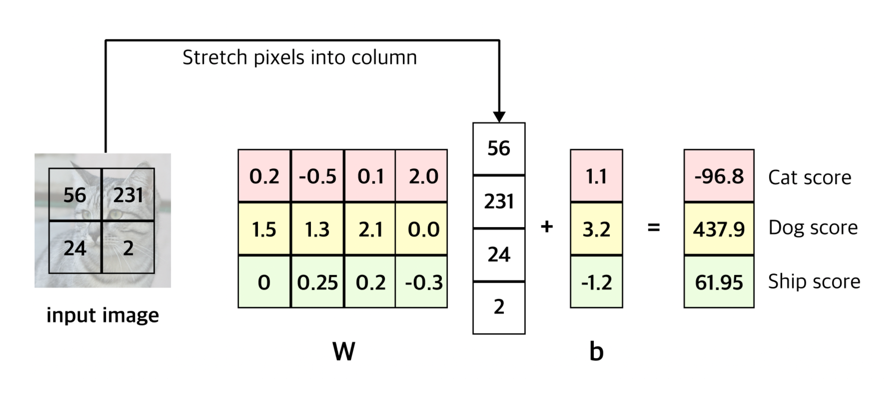
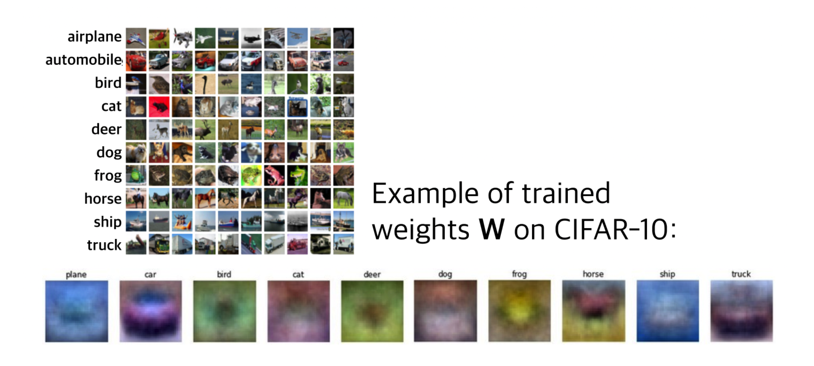
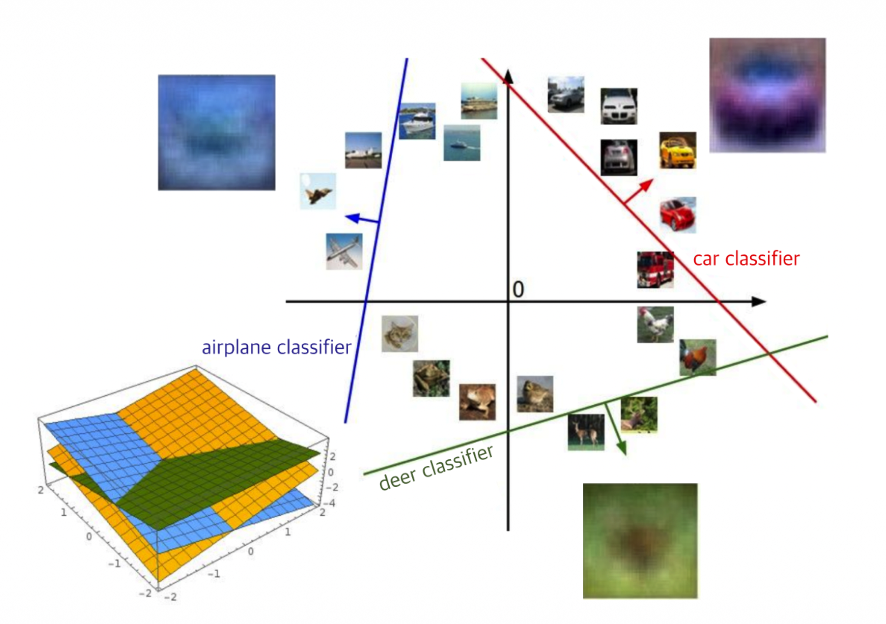

1. Introduction
이전 포스트([Lecture 2.1])에서는 이미지 분류 문제의 정의와 주요 데이터셋(CIFAR-10 등)에 대해 다루었다. 이미지는 컴퓨터에게 그저 거대한 숫자 그리드(Tensor)일 뿐이며, 우리는 이를 입력받아 “고양이”, “강아지”와 같은 클래스 라벨을 출력하는 함수가 필요하다.
이번 포스트에서는 그 첫 번째 단계로, 입력 데이터를 클래스별 점수(Score)로 매핑하는 스코어 함수(Score Function), 그중에서도 가장 기본이 되는 선형 분류기(Linear Classifier)에 대해 알아본다.
2. Score Function
2.1. 정의 (Definition)
- 스코어 함수는 입력 데이터(이미지)를 받아 각 클래스에 대한 ’확신(confidence)’을 나타내는 점수 벡터를 출력하는 함수이다. 이를 수식으로 정의하면 다음과 같다. \[
f_{\theta}: \mathcal{X} \rightarrow \mathbb{R}^{C}
\]
- \(\mathcal{X}\): 입력 공간 (예: 이미지)
- \(\theta\): 모델의 파라미터(Parameters)
- \(C\): 분류하고자 하는 클래스의 개수 (예: CIFAR-10의 경우 10)
- 함수 \(f\)는 입력 \(x \in \mathcal{X}\)를 받아 실수 벡터 \(s\)로 매핑한다. \[
s = f_{\theta}(x) = (s_{1}, s_{2}, \dots, s_{C})
\]
- 여기서 \(s_j\)는 \(j\)번째 클래스에 대한 점수이다. 최종적으로 모델은 가장 높은 점수를 가진 클래스를 예측값(\(\hat{y}\))으로 선택한다.
\[ \hat{y} = \operatorname*{argmax}_{j \in \{1, \dots, C\}} s_{j} \]
Note: 여기서 계산된 점수 \(s_j\)는 확률(Probability)이 아니다. 정규화되지 않은 선호도(Unnormalized preference)일 뿐이며, 값의 범위에 제한이 없다(음수일 수도, 매우 큰 양수일 수도 있음).
3. Linear Classifier
3.1. 수식적 표현 (Parametric Approach)
- 가장 단순하면서도 강력한 기초 모델인 선형 분류기(Linear Classifier)를 살펴보자. 이 모델은 입력 이미지 \(x\)와 파라미터 \(W\)의 선형 결합으로 점수를 계산한다.
\[ f(x, W) = Wx + b \]
- 이 수식이 작동하는 방식을 차원(Dimension) 관점에서 분석해보면 다음과 같다. (CIFAR-10 데이터셋 기준: \(32 \times 32 \times 3\) 이미지, 10개 클래스)
- 입력 \(x\): \(32 \times 32 \times 3\) 크기의 3차원 배열을 1차원 벡터로 쭉 펼친다(Stretch/Flatten). \[ 32 \times 32 \times 3 \rightarrow 3072 \times 1 \text{ vector} \]
- 가중치 \(W\) (Weights): 입력 차원과 클래스 개수를 연결하는 행렬이다. \[ W \in \mathbb{R}^{10 \times 3072} \]
- 편향 \(b\) (Bias): 입력과 무관하게 각 클래스가 가질 수 있는 기본 점수(우선순위)를 보정하는 벡터이다. \[ b \in \mathbb{R}^{10 \times 1} \]
- 결과적으로 행렬 곱셈을 통해 \(10 \times 1\) 크기의 점수 벡터를 얻게 된다.
\[ [\text{10} \times \text{1 Score}] = [\text{10} \times \text{3072}] \cdot [\text{3072} \times \text{1}] + [\text{10} \times \text{1}] \]
3.2. 계산 예시 (Example Calculation)
- 이해를 돕기 위해 이미지를 4개 픽셀(\(2 \times 2\))로 단순화하고, 3개의 클래스(Cat, Dog, Ship)를 분류하는 상황을 가정해보자.

- 위 그림의 수식을 보면:
- Cat Score: \((0.2 \times 56) + (-0.5 \times 231) + (0.1 \times 24) + (2.0 \times 2) + 1.1 = -96.8\)
- Dog Score: \((1.5 \times 56) + (1.3 \times 231) + (2.1 \times 24) + (0.0 \times 2) + 3.2 = 437.9\)
- 이 경우, Dog의 점수가 가장 높으므로 모델은 입력 이미지를 “Dog”로 예측하게 된다.
4. Interpretation of Linear Classifiers
- 선형 분류기 \(Wx + b\)는 단순한 행렬 곱셈이지만, 이를 해석하는 방법에는 세 가지 관점이 있다.
4.1. 템플릿 매칭 (Template Matching)
행렬 \(W\)의 각 행(Row)은 해당 클래스에 대한 템플릿(Template) 또는 프로토타입(Prototype)으로 볼 수 있다. 입력 이미지 \(x\)와 특정 클래스의 행 벡터 간의 내적(Dot Product)은 두 벡터의 유사도(Similarity)를 측정하는 것과 같다.
즉, 선형 분류기는 “입력 이미지가 각 클래스의 템플릿과 얼마나 비슷하게 생겼는지”를 측정하는 과정이다.
4.2. 시각적 관점 (Visual View)
- 학습된 가중치 \(W\)를 다시 이미지 형태로 시각화해보면, 모델이 각 클래스를 어떻게 인식하고 있는지 알 수 있다.

- Car: 붉은색 스포츠카 형태가 뭉뚱그려져 보인다.
- Frog: 화면 중앙에 녹색 덩어리가 보인다.
- Horse: 말의 형상이 보이지만, 다양한 자세의 말이 겹쳐져 머리가 양쪽에 있는 기이한 형태가 되기도 한다. 이는 선형 분류기가 클래스당 단 하나의 템플릿만 학습할 수 있기 때문에 발생하는 한계다.
4.3. 기하학적 관점 (Geometric View)
- 이미지를 고차원 공간(예: 3072차원)의 한 점으로 생각할 때, 선형 분류기는 각 클래스를 구분하는 선형 경계(Linear Decision Boundary) 또는 초평면(Hyperplane)을 긋는 것과 같다.
\[ Wx + b = 0 \]

5. The “Good” and “Bad” Parameters
우리는 \(f(x, W)\)를 통해 점수를 계산했다. 하지만 이 점수가 ’좋은지 나쁜지’는 어떻게 판단할 수 있을까?
아래 표는 임의의 가중치 \(W\)로 계산된 3개 이미지의 점수 예시이다.
- Image 1 (실제 정답: Cat): Cat 점수(2.9)가 Frog 점수(3.78)보다 낮다. \(\rightarrow\) Bad Prediction
- Image 2 (실제 정답: Car): Car 점수(6.04)가 가장 높다. \(\rightarrow\) Good Prediction
- Image 3 (실제 정답: Frog): Frog 점수(-4.34)가 매우 낮다. \(\rightarrow\) Terrible Prediction
| Class | Image 1 (Cat) | Image 2 (Car) | Image 3 (Frog) |
|---|---|---|---|
| Cat | 2.9 | -4.22 | 5.1 |
| Car | -8.87 | 6.04 | 4.64 |
| Frog | 3.78 | 4.49 | -4.34 |
| … | … | … | … |
단순히 점수를 계산하는 것만으로는 부족하다. 정답 클래스의 점수는 높이고, 오답 클래스의 점수는 낮추도록 가중치 \(W\)를 업데이트해야 한다.
이를 위해 “현재 모델의 예측이 얼마나 나쁜지”를 정량적으로 측정하는 함수가 필요한데, 이것이 바로 다음 포스트에서 다룰 손실 함수(Loss Function)이다.